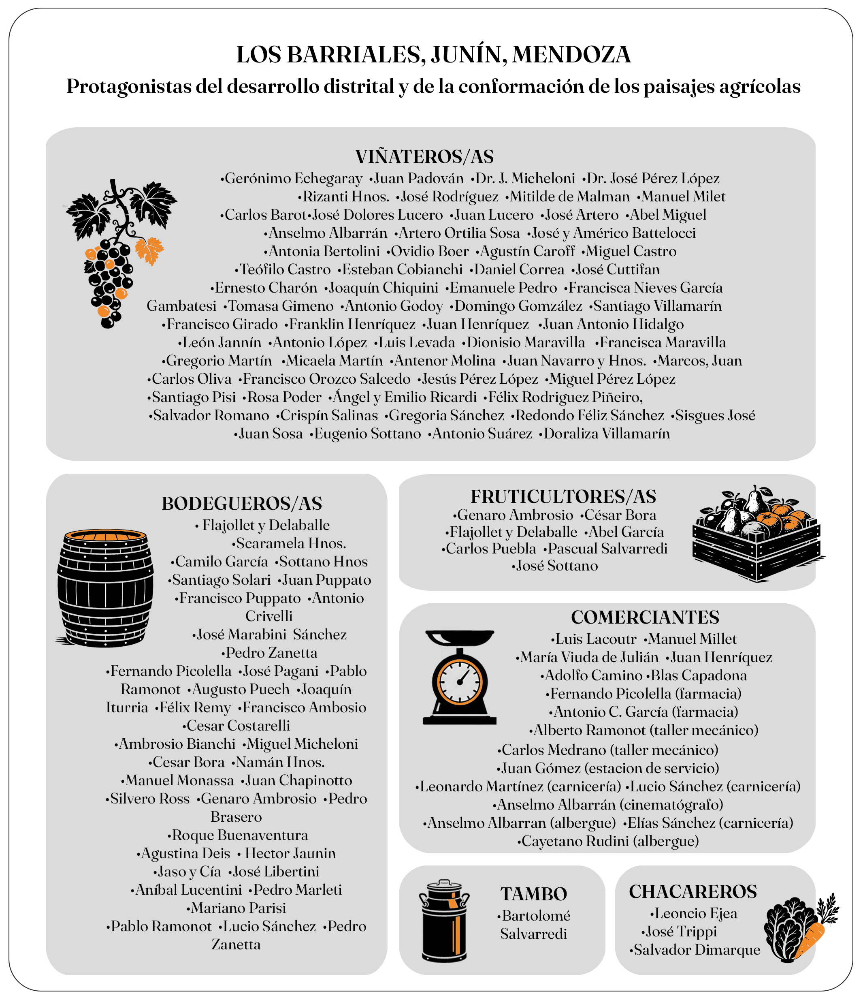

Protagonistas del crecimiento de Los Barriales y de la conformación de los paisajes actuales. Los listados que siguen reúnen los nombres registrados en dos fuentes de época: la guía Del Atlántico al Pacífico (BAP, 1930) y la conocida Guía del 40.

BAP 1930
Bodegas: Flajollet y Delaballe, Scaramela Hnos., Camilo García, Sottano Hnos, Santiago Solari, Cesar Costarelli, Juan Pupato, Francisco Pupato, Antonio Crivelli, José Marabini, Fernando Picolella, José Pagani, Pablo Ramonot, Augusto Puech, Joaquín Iturria, Félix Remy, Francisco Ambosio, Ambrosio Bianchi, Miguel Micheloni, Cesar Bora, Namán Hnos., Manuel Monassa, Juan Chapinotto y Silvero Ross (BAP, 1930).
Viñateros: Gerónimo Echegaray, Juan Padovan, Dr. J. Micheloni, Dr. José Pérez López, Rizanti Hnos., José Rodríguez, Mitilde de Malman, Manuel Milet, Carlos Barot, Dolores Lucero, Juan Lucero y José Artero (BAP, 1930).
Chacareros: se menciona la presencia de Leoncio Ejea, José Trippi y Salvador Dimarque.
Comerciantes: en comercios de tipo ramos generales, se menciona a los de Luis Lacoutr, Manuel Millet, María Viuda de Julián, Juan Henríquez, Adolfo Camino y Blas Capadona. En Farmacias destaca las de Fernando Picolella y Antonio C. García. El taller mecánico de la zona era de Alberto Ramonot y Carlos Medrano. La estación de combustible pertenecía a Juan Gómez, y las carnicerías de Elías Sánchez, Leonardo Martínez y Lucio Sánchez. También destaca como cinematógrafo a Anselmo Albarrán. En hoteles o edificios de alberge se encontraban los de Anselmo Albarran y Cayetano Rudini (BAP, 1930).
Guía del 40
Bodegas: Ambrosio Genaro, Brasero pedro, Buenaventura Roque, Deis Agustina, Jaunin Hector, Jaso y Cía, Libertini José, Lucentini Aníbal, Marabini José, Marleti Pedro, Mariano parisi, Puech Augusto, Puppato juan, Ramonot Pablo, Remy Félix, Sánchez Lucio, Sotana Hnos, Zanetta Pedro.
Fruticultores: Ambrosio Genaro, Bova César, Flajollet y Delaballe, García Abel, Carlos Puebla, Pascual Salvarredi, José Sottano.
Viñateros: Miguel Abel, Albarrán Anselmo, Artero Ortilia Sosa, José y Américo Battelocci, Antonia Bertolini, Ovidio Boer, Agustín Caroff, Miguel Castro, Teófilo Castro, Esteban Cobianchi, Daniel Correa, José Cuttifan, Ernesto Charón, Joaquín Chiquini, Emanuele Pedro, Francisca Nieves García Gambatesi, Tomasa Gimeno, Antonio Godoy, Domingo Gomzález, Santiago Villamarín, Francisco Girado, Franklin Henríquez, Juan Henríquez, Juan Antonio Hidalgo, León Jannín, Antonio López, Luis Levada, José Dolores Lucero, Juan Lucero, Dionisio Maravilla, Francisca Maravilla, Gregorio Martín, Micaela Martín, Antenor Molina, Juan Navarro y Hnos., Marcos, Juan y Carlos Oliva, Francisco Orozco Salcedo, Juan Padován, Jesús Pérez López, Miguel Pérez López, Santiago Pisi, Rosa Poder, Ángel y Emilio Ricardi, Félix Rodriguez Piñeiro, Salvador Romano, Crispín Salinas, Gregoria Sánchez, Redondo Féliz Sánchez, Sisgues José, Juan Sosa, Eugenio Sotana, Antonio Suárez, Doraliza Villamarín.
Tambos: Bartolomé Salvarredi.